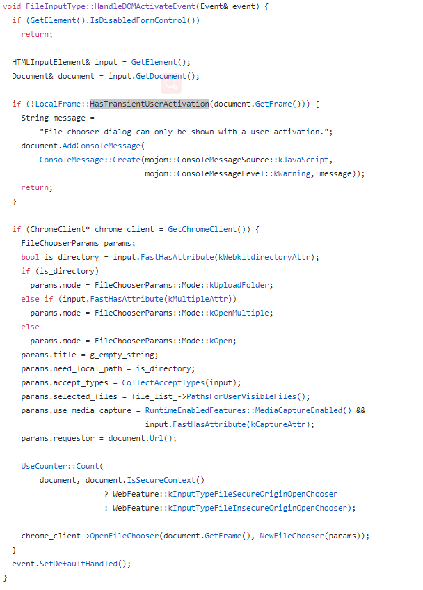

文件类型的 input 框是在网页端做文件上传的核心，但是它的按钮的字和文件名显示的字无法控制，所以一般会用一个 div 来代替 input 的样式，然后将 input 隐藏。
1 | // html |
实际场景中，需要通过请求才能知道能否让用户进行上次文件操作，但是意外得发现在 ajax 请求过后，再调用 input 的 click 却无法调出选择文件的选择框。
像下面这种情况，如果 ajax 延迟了 1 秒，选择框还是可以打开的，但是如果 ajax 延迟了有 5 秒之久，则不会打开选择框并且打印警告 “File chooser dialog can only be shown with a user activation.”
警告内容是 “文件选择框只能由用户激活”。这是为什么，延迟了 1 秒和 5 秒都不是由用户激活的，凭什么 1 秒就可以弹出，5 秒就无法弹出。
于是去 github 搜索了警告内容，在 chromium/chromium 项目中搜到了相关信息。
1 | CONSOLE WARNING: line 32: File chooser dialog can only be shown with a user activation. |
文件中提到了一个 bug 地址，进去一趟究竟。文中主要提到了几点：
2010-10-13 提出 input[type=file] 在 WebKit 中表示为文件上传控件，它是一个敏感控件，因为它可以访问用户的本地文件。 所以理想情况下浏览器应该只允许通过用户手势进行文件选择行为，但到目前为止只有 Firefox。
2010-10-16 添加代码，打开文件选择框时，需要判断是否用户行为。
2011-02-22 Firefox 4 和 IE 现在允许在输入元素上以编程方式调用.click（）。
2011-02-23 我建议只有一个计时器才能记住用户手势状态，并且在该超时内创建的新超时不能继承此手势。
可见，通过代码来调用文件选择框似乎和用户发起点击事件的时间有点关系，具体是什么关系，真的只是超时无法打开这么简单也并看不出来。此外，在 chromium 项目中还有另外一处被搜索到，但是通篇搜索也没找到定义这个函数的地方（cpp课没好好上 - -！）。

至此，也无法再继续往下查了，网上也没有相关的信息。关于文首的关于 ajax 请求之后无法打开文件选择框的问题，可以在用户点击时先弹出文件选择框，然后再经过 ajax 请求能否上传文件。